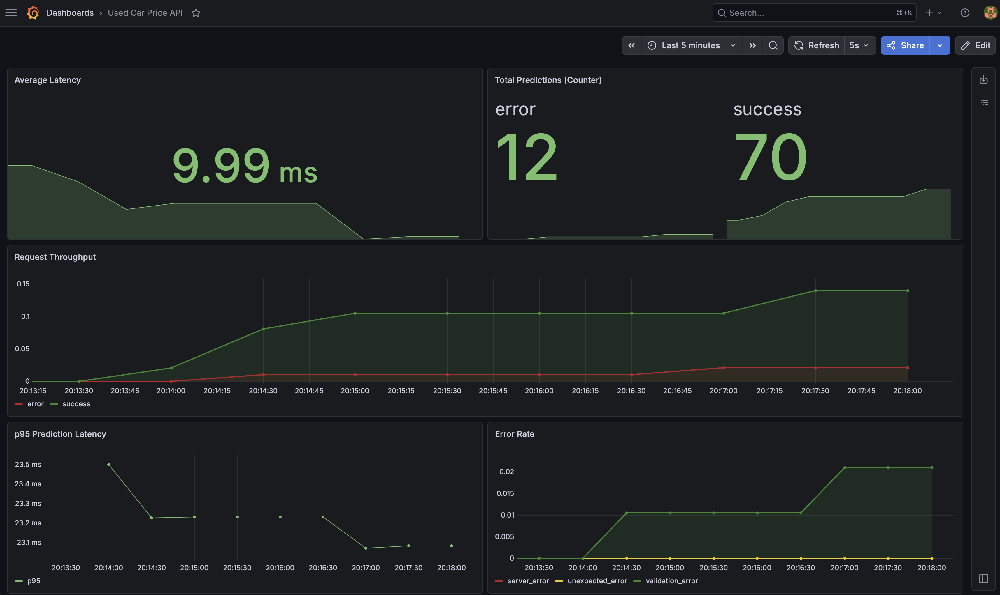

A CatBoost model taken from notebook to production — served via FastAPI with Docker containerization, Kubernetes orchestration, Prometheus observability, and automated CI/CD. The full ML engineering lifecycle.
Used-car pricing is a high-volume, high-stakes problem. Dealerships, online marketplaces, and auto lenders need fast, accurate price estimates to set competitive listings, flag underpriced inventory, and underwrite loans. A model sitting in a notebook doesn't solve any of those problems — it needs an API that's reliable, observable, and deployable.
This project demonstrates the full ML engineering lifecycle: taking a trained model and building the production infrastructure around it. Part 1 found the best model. Part 2 makes it actually useful.
Every prediction passes through validation, fuzzy correction, feature engineering, and model inference — the same pipeline used during training to eliminate training-serving skew.
The same pipeline.py transforms training data and API inputs. This eliminates training-serving skew — the most common silent failure mode in production ML.
Manufacturer, model, drivetrain, and fuel type are matched against the training vocabulary using SequenceMatcher. Typos get corrected with warnings, not rejections.
5 optional listing fields are filled with training-set medians when omitted. Users can submit 13 required fields and still get a reasonable prediction.
Prediction count, latency percentiles, and error rates exposed at /metrics. Middleware-based instrumentation keeps business logic untouched.
Submit vehicle attributes via POST and receive a predicted listing price in USD. The API handles typo correction, color normalization, engine parsing, and optional field imputation automatically.
{
"manufacturer": "toyota",
"model": "camry le",
"year": 2020,
"mileage": 35000,
"engine": "2.5l i4 dohc 16v",
"transmission": "8 speed automatic",
"drivetrain": "fwd",
"fuel_type": "gasoline",
"exterior_color": "silver metallic",
"interior_color": "black leather",
"accidents_or_damage": 0,
"one_owner": 1,
"personal_use_only": 1
}
{
"predicted_price": 27474.00,
"currency": "USD",
"model_used": "CatBoost",
"warnings": [],
"input_echo": { ... }
}
The API exposes Prometheus-compatible metrics at /metrics, scraped automatically by Prometheus via Kubernetes annotations. A custom Grafana dashboard visualizes prediction throughput, latency, and errors in real time — the same observability stack used in production ML systems.

Every push to main triggers a GitHub Actions pipeline with a two-tier test strategy. PRs get fast unit test feedback; merges to main run integration tests against the real CatBoost model.